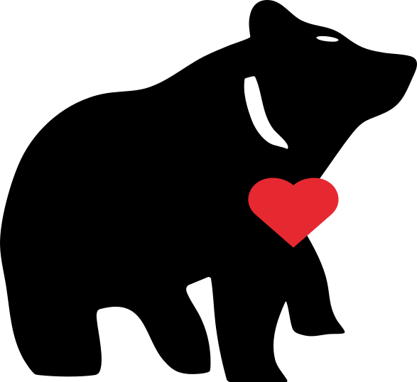
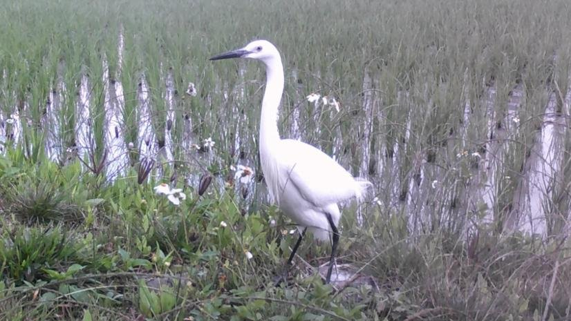
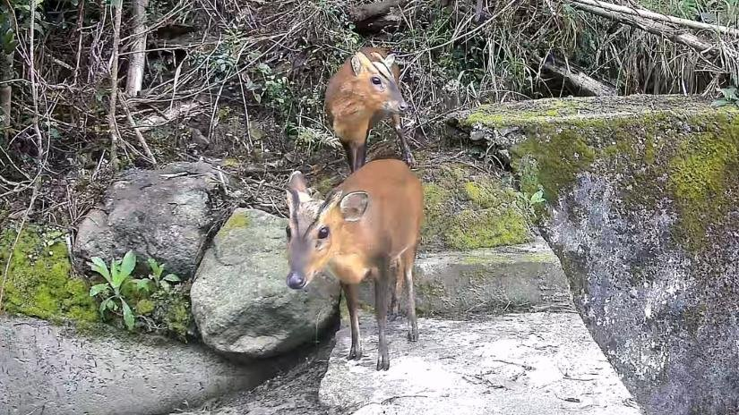
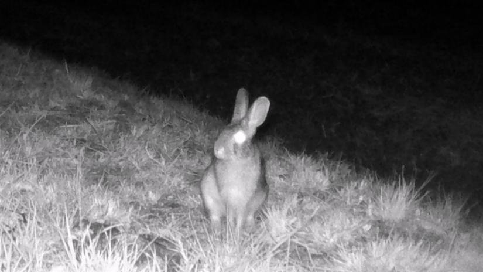

關於熊良心
從池上的一塊田開始
熊良心是扎根台東池上的
生態調查與監測
環境教育與生態旅遊
友善農業與地方創生
熊良心為什麼選擇在池上做這件事？
影片｜支持在地小農，守護自然生態：熊良心的使命與行動
企業為什麼現在就需要
明年的永續報告書，生物多樣性那一章要寫什麼？
揭露準則正在收緊，
今年開始監測，
2026.01
GRI 101 生物多樣性準則
取代 GRI 304，要求揭露營運據點與供應鏈對生物多樣性的影響；臺灣上市櫃永續報告書須參考 GRI 準則編製
遠見 ESG ›
2026 年度
126 家大型上市櫃
實收資本額逾百億元的上市櫃公司，2026 會計年度起在年報專章揭露永續資訊，2027 年起分階段擴及全體上市櫃
工商時報 ›
2026.10
ISSB 發布自然相關
國際永續準則理事會在 COP17 提出，協助企業依 IFRS S1 揭露自然相關風險；全球已有 1,002 家機構發布 TNFD 揭露
IFRS 基金會 ›
對企業的四個好處
1
「報告裡要放什麼，才不會只是一張動物照片？」
永續報告書有實際數據可寫
我們在您指定或認養的田區長期監測，交付物種名錄、保育等級、相機影像與 RAI 時間序列，並附 GRI 101、TNFD 對照表。您的報告寫的是一塊真實田地的變化，不只是一張動物照片。
2
「我們的 ESG 投入，拿得出成果證明嗎？」
把 ESG 預算變成可驗證的成果
農業部的農業永續 ESG 指引，要求企業參與的專案以可量測的科學數據呈現成果；其成果證明可作為永續報告書佐證，也有助於爭取綠色融資。長期監測與生態力報告，正是這類專案需要的數據。
3
「產品要怎麼和別人不一樣？」
讓產品有一段說得出口的產地故事
授權生態力標章，提供田間故事與物種影像，讓消費者看得到這包米、這道菜背後的田間生態。池上友善農產品已透過好食好事媒合走進米其林主廚的餐桌。
4
「會不會被說是漂綠？」
用第三方數據，避開漂綠風險
生態力證書由農業部農村水保署臺東分署、國立臺東大學與熊良心產官學三方驗證。我們也會在報告中寫清楚資料的限制：相機紀錄不等於生物多樣性已改善，必須有基線、持續監測與比較。
合作方式
選一項，您可以得到
成果範例
一份生態力報告長這樣
這是我們為池上合作小農製作的
點任一頁可放大翻閱，完整報告歡迎來信索取。
田間的
相機君拍到的田間鄰居
15,492
筆田間影像紀錄
104 種
野生動物，分屬 51 科
25 期
生態監測報告
7.6 公頃
5 位友善小農的合作田區

白鷺鷥｜稻田裡的常客

山羌｜田區周邊的紀錄

野兔｜夜間的相機紀錄
為什麼可以
一支有方法、有驗證、有紀錄的在地團隊
3方
產官學三方驗證
生態力證書由農業部農村水保署臺東分署、國立臺東大學、熊良心共同驗證
3套
保育等級
IUCN 紅皮書、臺灣紅皮書、保育類名錄同步對照，依調查年度的現行版本判定
5年
國發會連續支持
執行國發會地方創生青年培力工作站，111–115 年連續五年獲得支持
24小時
田間與
紅外線自動相機全天候運作，搭配定期田野調查；監測場域涵蓋池上友善稻田、大坡池濕地與菊池氏細鯽保種池
2026
受邀國際論壇
受邀 ICLEI「CitiesWithNature 城市與自然共生」論壇，分享農田生態履歷
10+家媒體
媒體持續報導
聯合報、自由時報、教育電台、環境資訊中心等持續報導